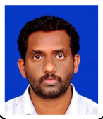

PhD Researcher at Vernam Lab, Worcester Polytechnic Institute. Working with Prof. Patrick Schaumont on side-channel analysis, fault injection, ASIC design, and post-quantum cryptography.

Hardware security researcher with 17 peer-reviewed publications and 14+ years of combined industry and research experience. Led two ASIC tape-outs (TSMC 180nm) and specialized in side-channel analysis (power, EM), fault injection (EMFI, laser, clock glitch), post-quantum cryptography (ML-DSA-87), and ML-based security verification.
I bridge the gap between theoretical fault models and practical hardware behavior, developing tools and methodologies for detecting, characterizing, and mitigating hardware-level vulnerabilities in embedded systems and RISC-V processors. I also work on deep learning approaches (CNN/GNN achieving 92% accuracy) for security assessment of micro-architectural states.
331 EMFI campaigns on RISC-V SoC. Direction-aware PDN loop models for fault susceptibility. EMFI, laser, and clock glitch attacks.
Differential and correlation power analysis on block ciphers (AES, PRINCE, SIMON, LED, GIFT), with countermeasure evaluation.
Leakage assessment using pre-silicon models, scan-chain-based micro-architecture state monitoring, and early-stage vulnerability detection.
Secure implementation of lightweight ciphers for IoT and resource-constrained devices, including stream ciphers and block ciphers.
CNN/GNN-based fault detection achieving 92% accuracy. Transfer learning reducing SCA traces by 2.8× and test time by 30%.
Co-developer of SCAPEgoat, FaultDetective, and GlitchGlück toolchains for side-channel and fault security evaluation.
Full RTL-to-GDSII flow. Led 2 tape-outs (CAPRI1, CAPRI6) in TSMC 180nm using Cadence, Synopsys, and OpenROAD.
First pre-silicon SCA methodology for ML-DSA-87 (FIPS 204): CPA with MTD=6 traces, template attacks with top-10 key recovery in 50 traces.